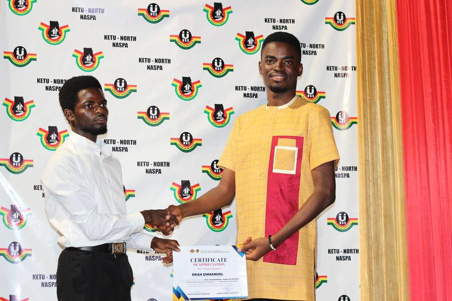

A look at the work, the people, and the life around it.
This is the part that does not always show up in the product shots — the people, the learning, the community, and the quiet work behind the things I build.

The systems I build
A few snapshots from the product side of the work — the interfaces, the workflows, and the kind of thinking that goes into making something usable.

A look at the ALERA interface built around care coordination and fast decisions.

Part of the workflow that helps lab information move with less friction.

A view of the consulting experience shaped around patient context and day-to-day use.
The people and places around the work
Some of these moments are about events, some are about learning, and some are about showing up for the community while building something of my own.

Launch day at the Ho West Tech Fest, with the kind of energy that makes learning feel real.

Hands-on VR sessions that gave local people a chance to see what these tools can do.

Conversations with people who care about building and sharing ideas across the region.

Young learners getting close to technology in a way that feels practical and encouraging.

A behind-the-scenes look at the work that goes into making events come alive.

Moments of planning and partnership that helped the work feel more connected to people.

Capturing the story with people who were part of the same journey.

A reminder that the relationships built around the work matter just as much as the work itself.
The milestones that came with the work
Some of these moments were formal, some were quiet, but all of them reflect growth, effort, and the value of showing up consistently.

A night of recognition, but also a reminder that the work is never only about one moment.

A personal moment from the night, showing how far consistency can carry a person.

A recognition that reflected the effort behind the scenes, not just the visible result.

Another milestone that reminded me how much quiet work goes into visible recognition.

A snapshot from the awards ceremony that felt like part of a bigger story.

Another moment from the night that captured the atmosphere of recognition and gratitude.

A group photo that reminds me how much of this journey has been shared with others.

A moment from the Tech Fest that felt like recognition for the effort and growth behind the work.

A milestone in hands-on learning that reminded me how much growth can come from showing up.

A small but meaningful reminder of steady progress and the value of learning by doing.